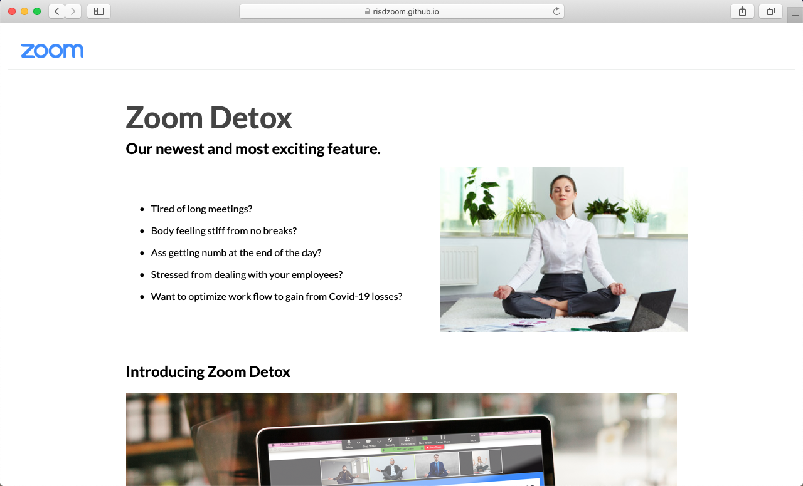

A new Zoom feature that enforces breaks between long corporate meetings.
Zoom Detox is presented as an online campaign that looks and feels like the branding of Zoom.
You can see the live project in the following invitation:
Learn about newest Zoom feature: “Zoom Detox”
https://risdzoom.github.io/ZoomDetox/
Meeting ID: 401 1877 2903
One tap mobile
+16465555656,,92655583831# US (New York)
+13126555799,,92615553831# US (Chicago)
Dial by your location
+1 646 555 8656 US (New York)
+1 312 555 6799 US (Chicago)
+1 301 555 8592 US
+1 346 555 7799 US (Houston)
+1 669 555 9128 US (San Jose)
+1 253 555 8782 US
Meeting ID: 401 1877 2903
